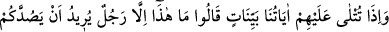

43. Onlara apaçık âyetlerimiz okunduğu zaman demişlerdi ki: Bu, sizi
babalarınızın taptığı (putlardan) çevirmek isteyen bir adamdan başkası değildir. Ve
yine “Bu (Kur’an) da uydurulmuş bir yalandan başka bir şey değildir.” dediler. Hak
kendilerine geldiğinde onu inkâr edenler de: “Bu, apaçık bir büyüden başka bir şey
değildir.” dediler.
“Onlara” Mekke müşriklerine, Peygamber (a.s.)’ın diliyle, tevhidin hakikatine ve
şirkin bâtıl olduğuna delaletleri “apaçık” olan Kur’ânî “âyetlerimiz” peş peşe
“okunduğu zaman” Hz. Peygamber (a.s.)’a işâret ederek “demişlerdi ki: “Bu, sizi
babalarınızın” uzun zamandan beri “taptığı” putlardan “çevirmek” engelleyip
alıkoymak, ilâhî bir din olmaksızın sizi kendi uydurduğu şeye tâbi kılmak “isteyen bir
adamdan başkası değildir.” Yâni O’nun iddiası sizi putlara tapmaktan menetmek, kendi
ortaya attığı dine ve merasimlere dâhil edip sizi kendisine tâbi kılmaktır.
Onların “bir adam” sözü, küçümsemek ve alay etmek içindir; yoksa Rasûlullah (s.a.)
onlar tarafından bilinen ve meşhur olan bir kimseydi.
“Babalar” kelimesinin kendilerine değil de “babalarınız” şeklinde muhataplara izâfe
edilmesi, onları mübâlağa ile şirkte karar kıldırmak ve tevhidden uzaklaştırmak üzere
onların asabiyet damarlarını tahrik içindir.
“Ve yine “Bu” Kur’an “da” Allah Teâlâ’ya isnâd edilerek “uydurulmuş bir
yalandan” muhtevâsında bulunan tevhîd ve gerçekleşecek olan yeniden diriltilme
onların anlayışına uymadığından aslından saptırılmış bir sözden “başka bir şey
değildir.” dediler.”
İftirâ, kasden söylenen yalandır. Müşrikler bu sözü inâd ve kibirlerinden dolayı
söylemişlerdir. Yoksa onların büyüğü olan Utbe b. Rebia “Vallahi bu söz şiir değil,
kehanet ve sihir değil.” demişti.
“Hak” Kur’an, Allah tarafından “kendilerine geldiğinde onu inkâr edenler de: “Bu,
apaçık” şüphesiz sihir olduğu açık “bir büyüden başka bir şey değildir.” dediler.”
Yukarıda “bu” zamiri ile Kur’an’ın mânâsı, buradaki “hak” kelimesi ile de Kur’an’ın
mu’ciz olan nazmı murad edilmiştir. Burada kâfirlere olan gazabı ortaya koymak ve
Kur’an hakkında böyle bir söze ancak küfürde devamlı, azgınlık ve bâtıla dalmış
olanların cür’et edeceğine delalet için zamir yerine açık isim konulmuştur.
Burada “ ” kelimesinin ifâde ettiği hazır bulunmanın mânâsı, inkârcılar Kur’an
” kelimesinin ifâde ettiği hazır bulunmanın mânâsı, inkârcılar Kur’an
kendilerine geldiği anda ve onu ilk duyduklarında hiç düşünmeden hemen onu
yalanladılar ve inkâr ettiler, demektir.
Sihir, bir kimseye hile yapıp aldatmak ve onu şaşkın ve hayrete düşmüş bir hale